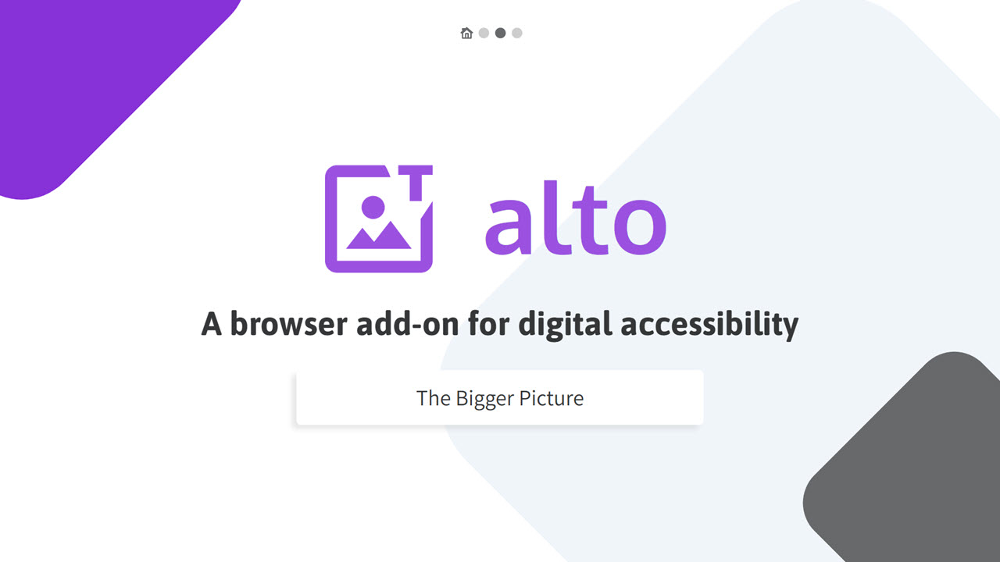
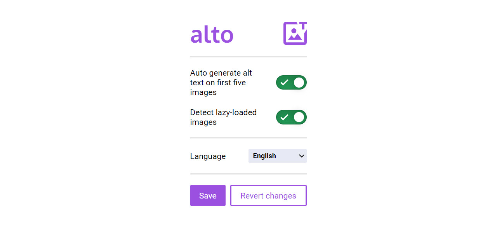

Back to Projects

alto is a browser add-on that automatically generates alt text for images on a webpage as a means of addressing the 60%+ of online images lacking alt text, and making the Internet a more inclusive place for screen reader users.
As the developers of alto, The Bigger Picture - a team consisting of Thomas Tai, Raymond Ma and myself - managed to earn the title of 2023 Microsoft Imagine Cup Americas World Finalists!

As the team's frontend developer, I translated the add-on design from Figma to HTML and CSS. In particular, special care was taken to ensure that the toggles in the add-on were accessible to keyboard navigation and screen readers, with the use of wrappers around a HTML checkbox and ARIA labels. This ensures a pleasant yet inclusive UI.
Additionally, I handled various features involving user interaction via JavaScript, ensuring that the relevant Azure API was called, and that the response is returned according to user settings (e.g. language).